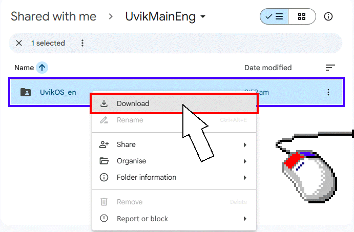
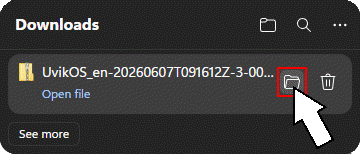
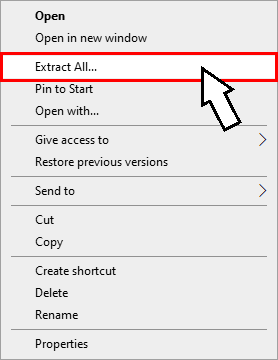
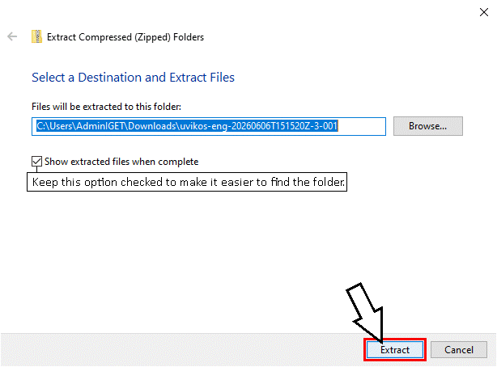
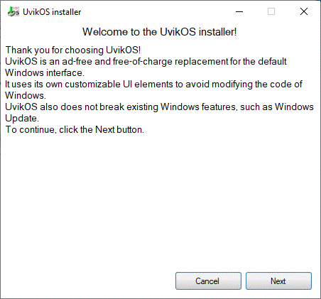

How to Download UvikOS
First, open the UvikOS download link: UvikOS - Google Drive. Then click uvikos and then select the Download option.

Wait for the ZIP archive to download (for example, "uvikos-eng-20260606T151520Z-3-001.zip"). After the download is complete, locate the file in File Explorer. You can do this by clicking the folder icon next to the downloaded file.

Extract the downloaded ZIP archive. You can do this by right-clicking the file, selecting Extract All, and then clicking Extract.


Next, locate the extracted folder and run the "Install UvikOS" file. Because UvikOS doesn't have a paid certificate, Windows may show a SmartScreen warning. Just click More info and then Run anyway to run the file.
